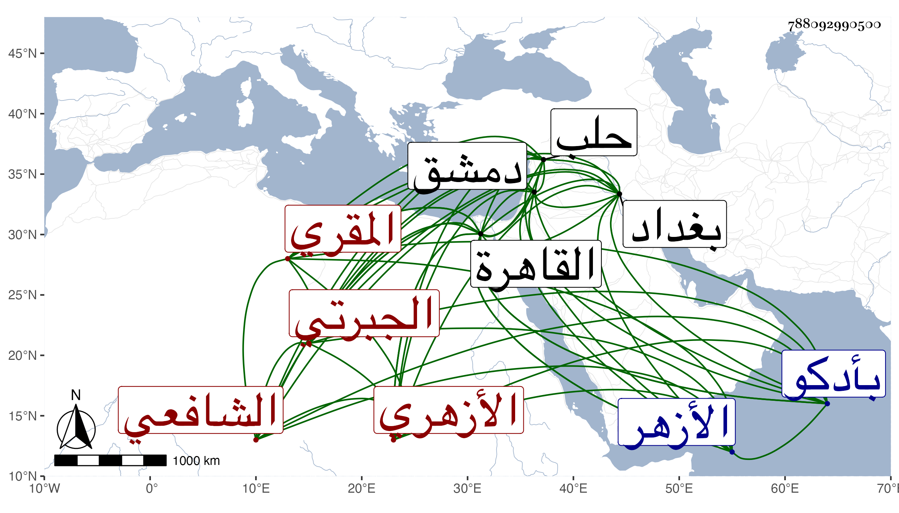

0902Sakhawi.DawLamic.ITO20230111-ara1.EIS1600.788092990500
Biography ID: 788092990500
147
علي بن يوسف بن صبر الدين بن موسى الجبرتي ثم الأزهري الشافعي المقري ويعرف بالجبرتي . قدم القاهرة نحو الخمسين فقرأ بها القراءات على الشهاب السكندري والشمس بن العطار وابن كزلبغا وسمع على جماعة ومما سمعه ختم الصحيح على الأربعين في الظاهرية القديمة وسافر منها ودخل دمشق في سنة ست وسبعين وقرأ فيها القراءات على ابن النجار ثم توجه منها إلى بغداد وصحب فضل القادري من ذرية الشيخ عبد القادر ولبس منه الخرقة ونحوها ثم سافر منها إلى حلب فقطنها مدة من سنة ثمان وستين وسمع فيها من ابن مقبل وأبي ذر ثم عاد إلى القاهرة فقطنها من سنة سبعين وعقد ناموس المشيخة وجلس في خلوة بسطح الأزهر وتردد إليه غير واحد من الخدام فصار يتوسل بهم في حوائج من يقصده من تجار الحلبيين ونحوهم وقصده بالزيارة المناوي فمن دونه فراج عند كثيرين وابتنى في سنة ثمان وسبعين بأدكو جامعا كانت البلد في غنية عنه وصار يكثر التردد إليها والله أعلم بقصده وكثرت مساعدته لقاضيه ابن الغويطي ، وربما أخذ عنه بعض الطلبة القراءات وحاله أصلح من كثيرين .
